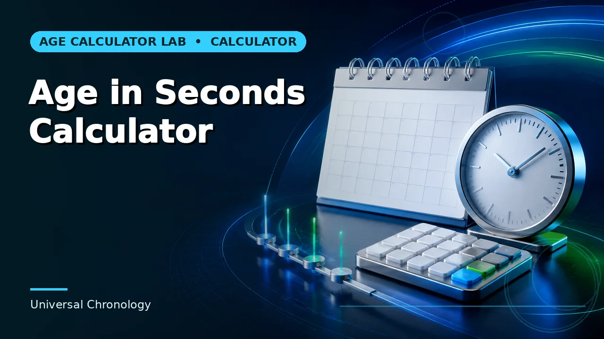

Quick answer
At day resolution the date is exact and calculable. Second-level precision needs the birth time and its time zone.
The arithmetic
A billion seconds is 1,000,000,000 ÷ 86,400 = 11,574.07 days. Adding 11,574 days to a date of birth gives the calendar date on which the billion-second mark falls, with the remaining 0.07 days — about an hour and forty minutes — depending on the birth time.
In years that is about 31 years and 8 months. It arrives comfortably before a 32nd birthday for most people, which makes it a genuine alternative milestone rather than a near-duplicate of one.
Use this guide with the right tool: Open the Billion Seconds Calculator for the date corresponding to one billion elapsed seconds. If the question shifts, compare it with the Age in Seconds Calculator or the Milestone Birthday Calculator.
Precision you probably do not have
To know the exact second you would need your birth time recorded to the second, in a known time zone, with any daylight-saving offset resolved. Birth certificates in many countries record a time to the minute at best, and plenty record none at all.
So the honest output is a date, with the acknowledgement that the moment within that date is unknown. A tool that displays a precise timestamp from a date-only input is showing you a fabricated level of precision.
Other second-based milestones
A hundred million seconds is about 3 years 2 months. Half a billion is about 15 years 10 months. Two billion is about 63 years 5 months. Pi billion seconds — a genuine internet tradition — is about 99 years 6 months, which almost nobody reaches.
The scale jumps are large because seconds are small. That is part of the appeal: a billion of anything sounds enormous, and reaching a billion of them in your early thirties reframes how big a billion actually is.
Leap seconds do not matter
Occasional leap seconds have been inserted into UTC to keep it aligned with Earth's rotation — 27 of them since 1972. Over a billion seconds that is a rounding error of 27 seconds, invisible at any resolution you can actually measure against a birth certificate.
They are worth knowing about mainly because they are the reason a strict count of SI seconds and a count of clock time diverge slightly. For this purpose the difference is not worth modelling.
Worked example
The shape of the calculation stays the same with your own figures. What changes is the source of the rule, so check that before treating the number as settled.
Common mistakes to avoid
- Calling it 31 years exactly. It is closer to 31 years and 8 months. Rounding to the year misses by most of a year.
- Displaying a timestamp from a date-only input. The time of day is unknown without a recorded birth time. Say so rather than fabricating it.
- Worrying about leap seconds. Twenty-seven seconds across a billion is not measurable against a birth record.
Use the right calculator
Start with whichever matches the information you already hold. The other two are there for when the question shifts.

Frequently asked questions
How many days is a billion seconds?
11,574 days and about an hour and forty minutes, which is roughly 31 years and 8 months.
Can I calculate it to the second?
Only with a birth time recorded to the second and its time zone. Most people have neither.
What about a billion minutes?
About 1,902 years, so nobody reaches it. A million minutes, at 694 days, is the practical minute-based milestone.